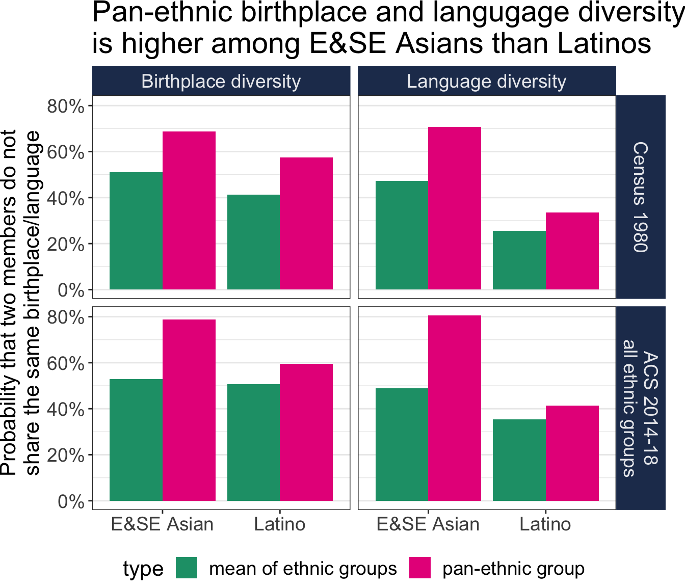
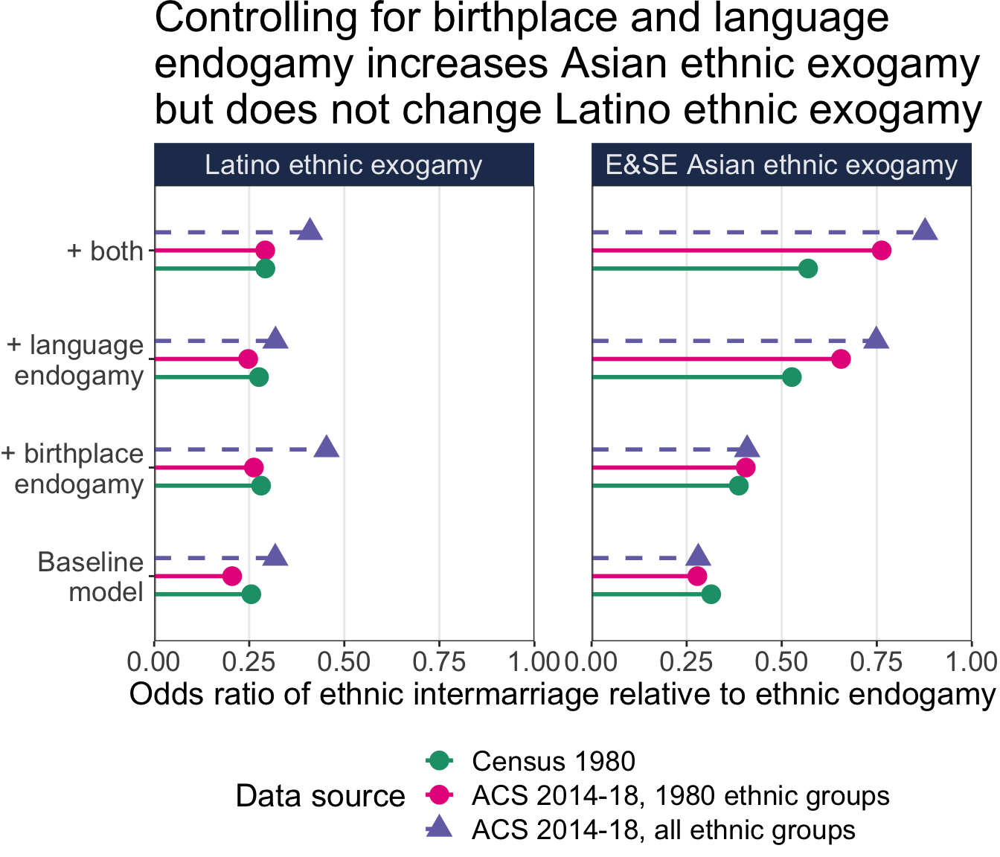
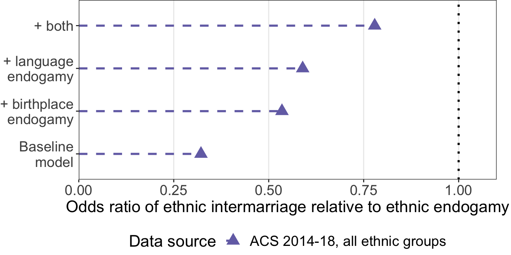

Accounting for birthplace and language endogamy, Asian ethnic exogamy has become more common and is more likely than interracial marriage, while Latino ethnic exogamy has changed little over time and remains less common.

Changes in Pan-Ethnic Intermarriage in the United States, 1980-2018
Aaron Gullickson 1, 
@AaronGullickson
aarong@uoregon.edu
1 Department of Sociology, University of Oregon
Research Questions
- How has the likelihood of ethnic exogamy (e.g. Japanese and Korean, Mexican and Puerto Rican) changed among Asians and Latinos?
- How does accounting for language and birthplace endogamy affect the likelihood of ethnic exogamy?
I use 1980 Census data and recent American Community Survey data, which include variables on marriage timing, to answer these questions using newly-formed marriages.
Methods
I use a counterfactual marriage model:
- I select all marriages formed within the previous five years, excluding those unions formed before migration to the US.
- For each real union, I sample 20 alternate partners for one randomly determined spouse from the same state.
- I use a conditional logit model to predict which union is the real union.
- All models control for age and educational differences between spouses.
- The 1980 Census data only allows for the identification of Chinese, East Indian, Filipino, Japanese, Korean, and Vietnamese ethnicities among Asians and Mexican, Cuban, and Puerto Rican ethnicities among Latinos.
Findings
- Birthplace and language endogamy substantially suppress ethnic exogamy among Asians, but not among Latinos.
- Accounting for birthplace and language endogamy, ethnic exogamy among E&SE Asians is high and has grown more common over time. Ethnic exogamy is also high among South Asians, but a historical comparison is not possible.
- Exogamy between E&SE Asians and South Asians has become less common over time, suggesting two distinct “melting pots” of Asian pan-ethnicity.
- Ethnic exogamy among Latinos is low and has not increased. Latinos are no more like to marry a a non-co-ethnic Latino than they are to marry a white person.
The role of birthplace and language


Results for South Asians
